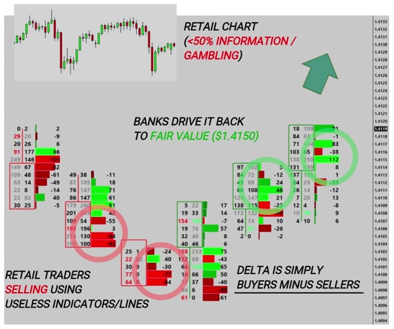

Remove your technical analysis junk and use institutional tools to know who is INSIDE your candlestick.
Through the use of READING ORDERFLOW DATA by way of footprint charts allows the trader to look inside their candlesticks and see the number of BUYERS AND SELLERS that are transacting within the candle.
Technical Analysis, Simple Candlestick Charts
For our iPhone business, we ring some iPhone dealers or contacts abroad and we are able to source them for $800 if we buy them in bulk, so we now have a supply of iPhones. To get the fair price of iPhones or to see where we might be able to sell our stock in the future, we are going to go on a site like eBay and see exactly what people have been paying for iPhones recently. We check the sold listings. We try to figure out at what price people can sell their iPhones by looking and researching what demand is at different prices. We plot a volume profile.
Retail do the complete opposite to banks
When retail traders sell the pound, we buy from them (doing the opposite), because we see that the fair price is higher (based on the volume profile). Later, as institutions start piling in and retailers are forced to exit their shorts (like sheep, all in one go, because they all get nervous), the pound makes its way back up. The pound is too cheap right now, but when should we buy it? The footprint helps with timing because it shows when others start buying aggressively.
Retail traders use technical analysis, banks use order flow.
The delta, as seen in Footprint Charts, is simply the difference between the buyers and sellers. When it is negative, it tells us we have more sellers than buyers. More buyers, market moves up, more sellers, market moves down.